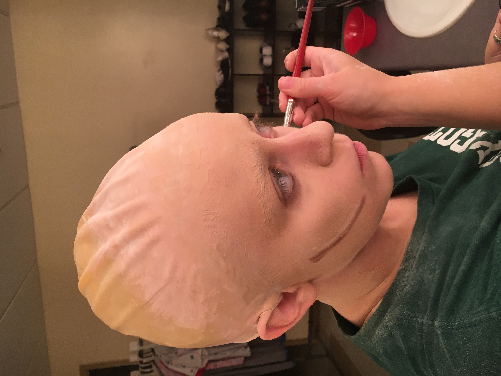
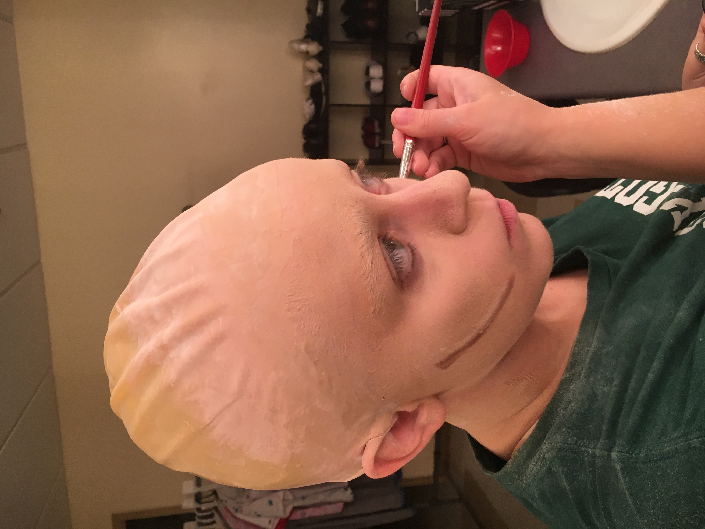
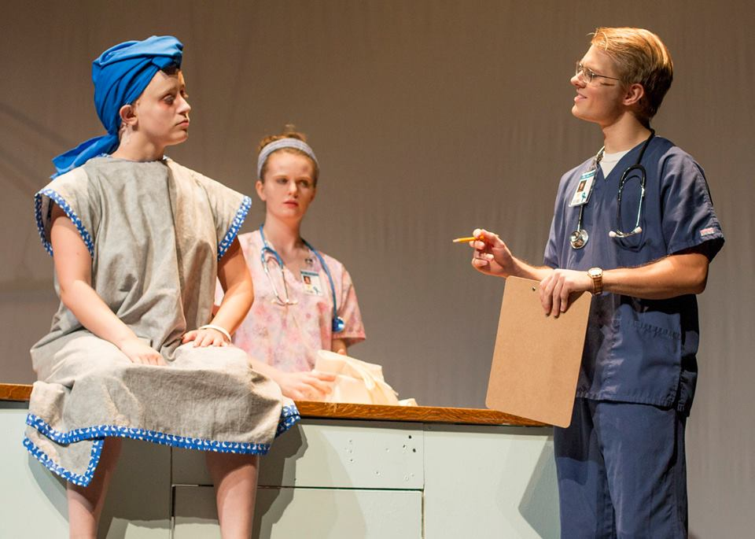
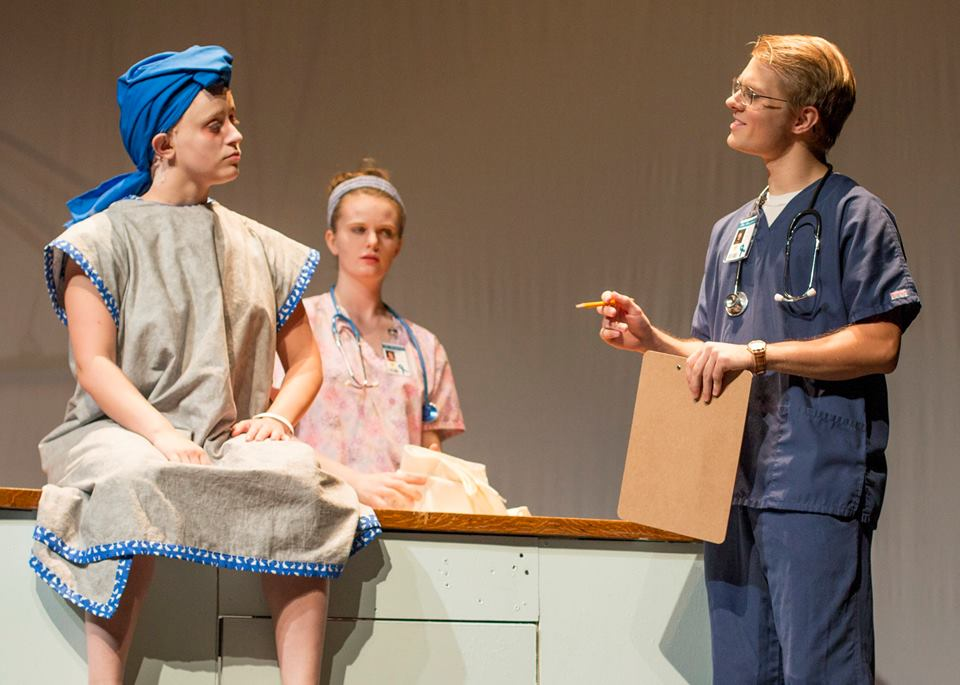
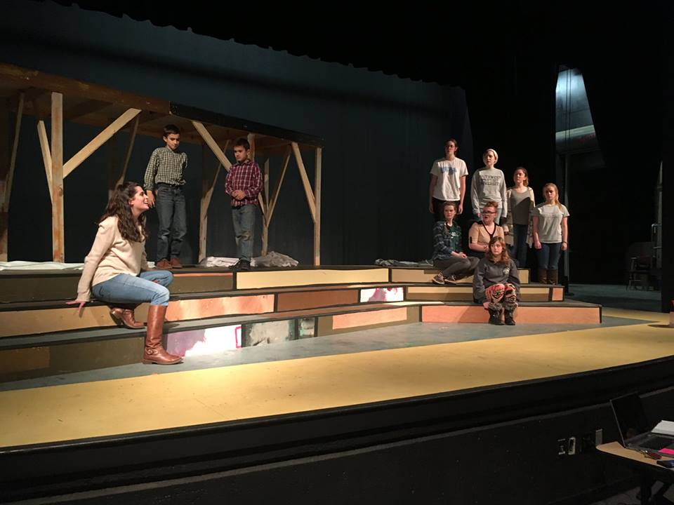
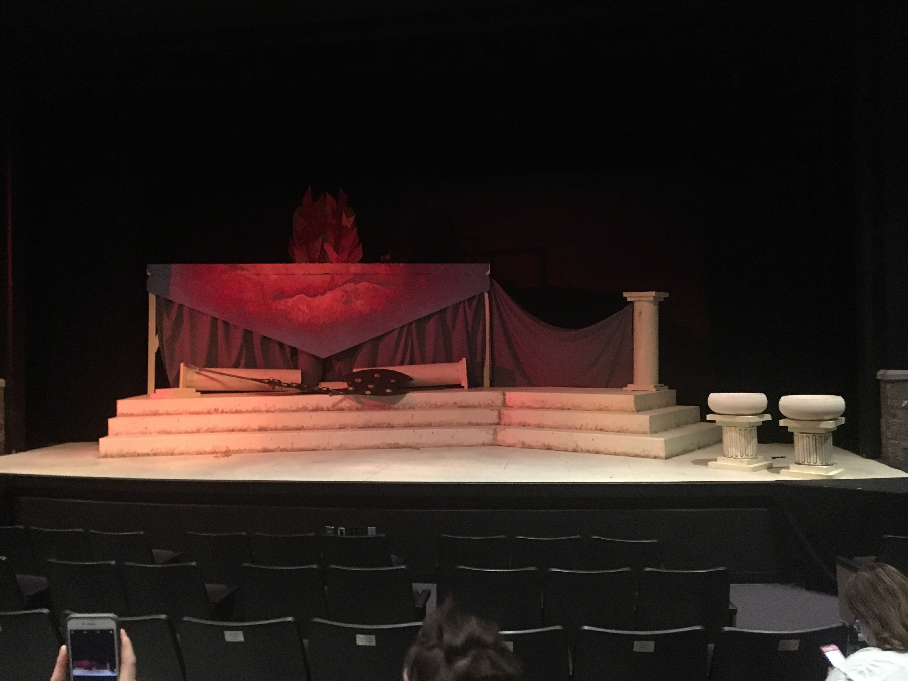
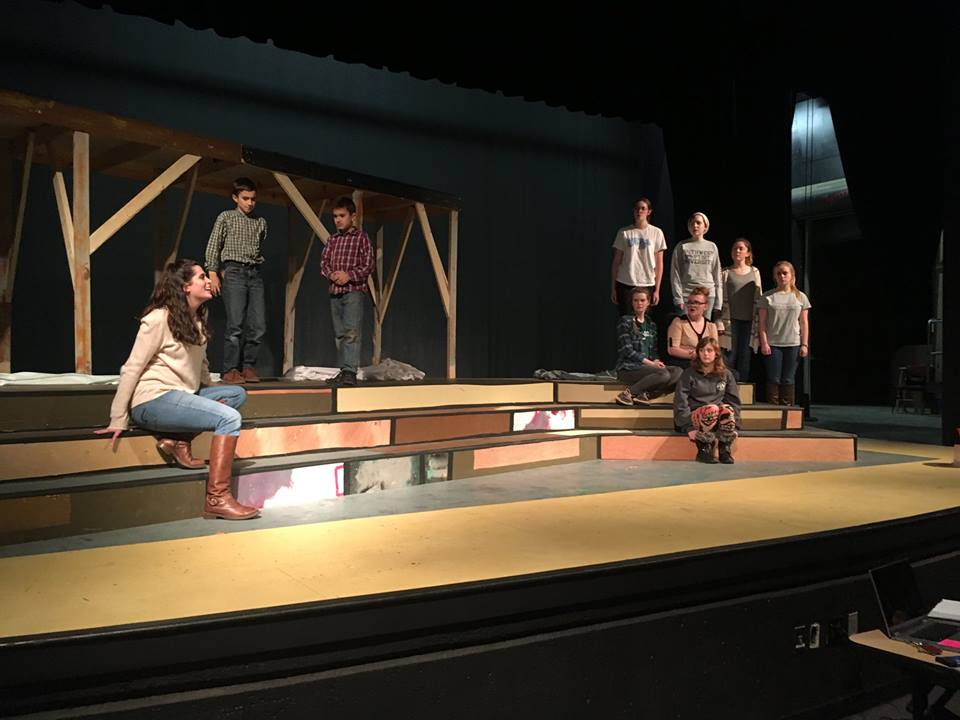
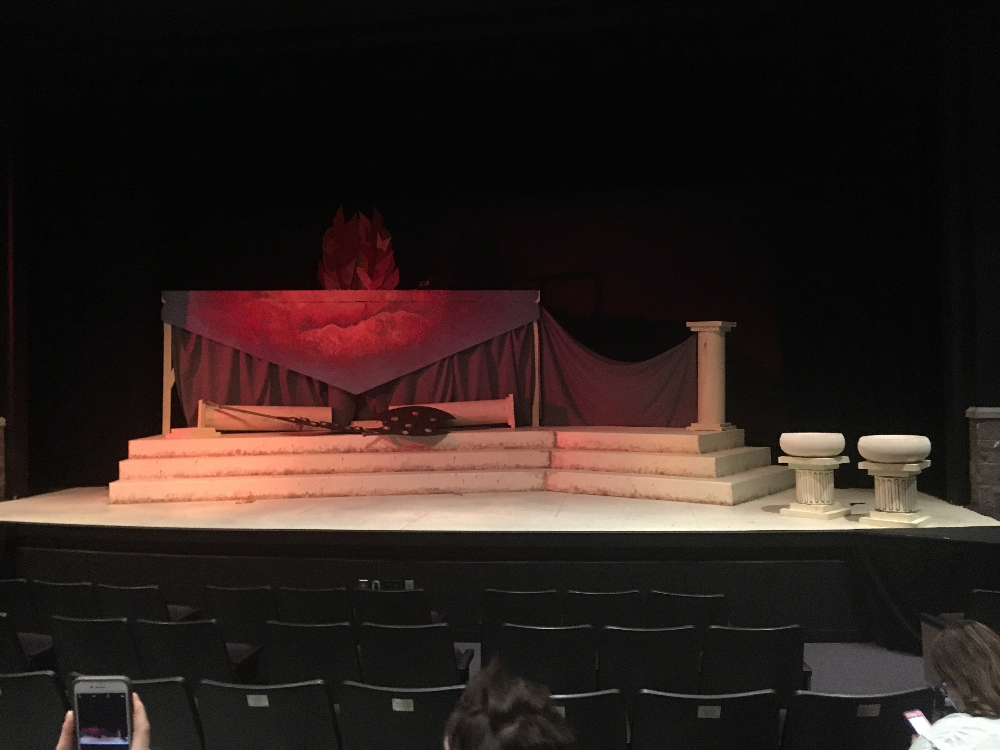

The Bald Soprano


This set was a fairly simple one, the most complicated aspect was adding stage out into the audiance. The hanging clock was one of my main charges. We ended up using a router on a jig to create the perfect circle. Atemping to reupholster the couches also took a lot of staples.
The lights were a really cool aspect of this show and I got to run the follow spot. They certanly made the performance a lot more dramatic.
Scenic Charge for Medea
The Sun Roof I had the privlege to design and paint the roof/sun rise for the set of Medea. It was basicly this sixteen foot long triangle that on one side looked like a old stone roof and on the other, a firey charriot. The first picture is mid-painting with the one in this view is the compleated set piece. The picture in the main view shows the front of the roof which I also painted.
When designing the project I mostly looked at pictures of real sunsets and inproved from there. This was a really fun painting to do as I really got to play with the colors.
The Importance of Being Earnest

 


Head Carpenter Periaktos. Periaktos. Periaktos. This set was one of the more complicated ones I've worked on. The design called for six periaktos with bookcases inside them and they ended up being very tricky. When we started we didn't have a real plan as to how we were going to mount them to the stage. In the end, we had to add false drawers and cut out some of the middle section from each periaktos.
Other then the Periaktos, the set went okay, I read the drafting for and built the window along with the doorway frames. I did not end up painting the set which I was sad about but none of the painting was too intricate.
Hair and Makeup for Wit

The bald Cap Madison Lay and I worked on this design together and because neither of us had ever done it before it was nice that the director wanted something fairly simple. Everyone except the lead, Vivian had very basic stage makeup. Vivian had to wear a bald cap. I spent a lot of time reasearching and preping for that cap. Thankfully she also wore a headscarf so we only had to conceal what the scarf would not. Spirit gum and glue sticks led this project.
Pictured here is the make up maps I made and in the other view, the picture is of the bald cap when I had just finished applying it for that night. Ali-the actress-was still finishing the last makeup touches.
Wit


 

For the most part, this set was very minimalistic. By far the largest problem we ran into was buidling a functional curtain track. We needed to be able to hang a curtain and be able to move the curtain from one side or the other during the show. The scene designer purchased a track meant to be hung from the celing with the pieces not really conected to each other. We ended up using wire and a lot of epoxy glue to hold the pieces togther and it was very very flimsy. If anyone ever does this, glue the track to boards and hang the boards. Or buy track that is meant to hang.
We also had to build a multi-functional desk and for a while we tried to fasion medical sturups but that turned out be impractical.
Medea
 



A Lot of Platforms The Medea set was fun to build because of all the things it needed. There were many levels and a platform ten feet in the air. A complicated part that I helped with was building plugs to go in the courners of each stair. There was a lot of math involved to get the perfect shape. We came pretty close to getting it perfect and with a little gaff tape, no one could tell the difrence.
The majority of my job for this show was painting. I got to make some calls as to how things were painted and apply a lot of the paint. I realy liked this set because of all the painting I got to do.
“We are all windmills.”
— Mr. Wehmeyer, Theater Professor
“Have you considerd not being stressed?”
— Madison Lay
“I cannot block this play because you all are a herd of goats!”
— Dr. Bethany Wood, Theater Professor
+319-936-0004
abbiegailandrews@gmail.com
s766721@sbuniv.edu
Invantion © 2016 ThemeWagon
 AdCholces
AdCholces
{kind=link}